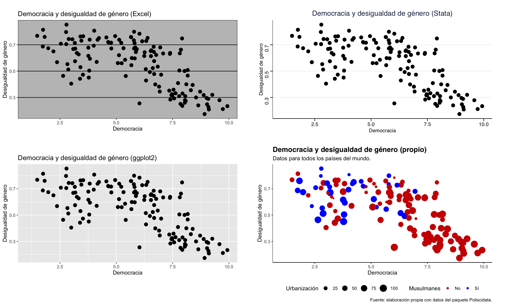
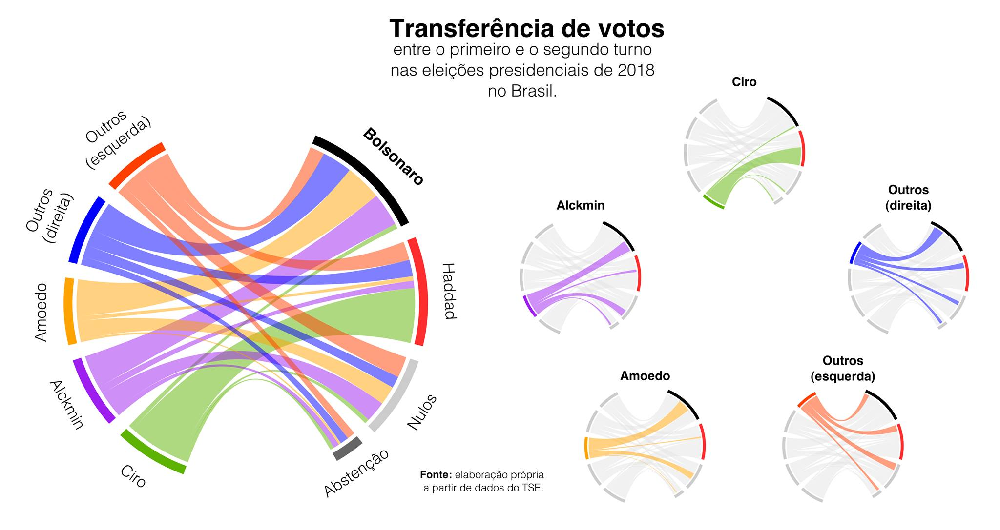

Fundamentos
de visualización de datos
¿Por qué visualizar datos?
El documental de PBS “El arte de la visualización de datos” resulta muy informativo sobre la importancia de la visualización de datos:
Todos los días vemos cómo se manipula la información para intentar convencer a la gente. Los gráficos no se quedan fuera de esa tendencia. El corto video abajo nos muestra algunas de las estrategias más comunes para descubrir intentos de mentir con gráficos:
¿Qué es la visualización de datos?
La visualización de datos es una forma de comunicar información de manera efectiva utilizando elementos visuales como gráficos, mapas y tablas. Se trata de una parte esencial del trabajo científico, puesto que representa tanto una herramienta de análisis como un instrumento de comunicación de los resultados.
Dentro de los ámbitos científicos, los gráficos se consideran como parte del proceso de exploración de datos. Resultan muy útiles para descubrir patrones, validar la calidad de los datos y entender procesos que serían más difíciles de entender si se presentaran en forma de tablas o texto.
Más recientemente, su uso se ha extendido a la comunicación de resultados y a la divulgación científica, ya que permiten presentar de manera clara y efectiva los hallazgos de un análisis de datos tanto a expertos como a un público no especializado.
¿Por qué es importante la visualización de datos?
Tomemos como ejemplo, el gráfico “Warming Stripes”, creado por Edward Hakwings en 2018 para representar los cambios en las temperaturas medias anuales entre 1850 y 2017.

Este gráfico se ha convertido en un símbolo de la lucha contra el cambio climático y ha sido utilizado por organizaciones como la ONU y la NASA para concienciar sobre el problema. ¿Por qué? Examinemos algunos elementos que hacen este gráfico tan efectivo:
Simplicidad: El gráfico es simple y fácil de entender. No hay elementos de distracción, comentarios o decoraciones indeseadas, ni siquiera hace falta una escala informando qué se mide. Por solo mirarlo, ya nos damos cuenta de que se trata de una secuencia lineal de temperatura. Aquí, la regla de “menos es más” se afirma con mucha potencia.
El uso del color: El uso del color es muy efectivo. El color azul representa temperaturas más bajas, mientras que el rojo representa temperaturas más altas. La elección de estos colores es muy acertada, ya que el azul y el rojo son colores que se asocian comúnmente con el frío y el calor. Por lo tanto, no hace falta una leyenda para explicar qué representa cada barra.
El uso de la escala: Por tratarse de cambios (y no de valores absolutos), la variación entre las observaciones aumenta, lo que facilita la visualización de un patrón claro e inequívoco de calentamiento global.
En resumen, aunque siempre haya habido grupos contrarios a la tesis del calentamiento global, a partir de la creación de esta visualización, cualquiera que quiera argumentar en contra tendrá mucha mayor dificultad en hacerlo y necesitará argumentos muy convincentes para disuadir a la gente.
Teniendo en mente el ejemplo anterior, podemos decir que la visualización de datos es importante por varias razones:
Facilita la comprensión de los datos: Los gráficos y las visualizaciones permiten comprender mejor los datos y descubrir patrones y relaciones que serían difíciles de detectar de otra manera. Es cada vez más común trabajar con una cantidad enorme de datos que serían inabarcables sin estrategias heurísticas que posibilitaran su síntesis de manera efectiva. Los gráficos son una de las formas de abstracción más poderosas. Vemos que se trata de un gráfico muy fácil de leer.
Facilita la comunicación de resultados: Los gráficos y las visualizaciones permiten comunicar de manera clara los resultados de un análisis de datos a expertos y a un público no especializado. No hace falta ser un experto en climatología para entender que las barras rojas son cada vez más largas y que eso significa que las temperaturas están aumentando. Personas con muy distintos niveles educativos pueden entender el mensaje.
Facilita la toma de decisiones: Los gráficos y las visualizaciones permiten tomar decisiones informadas basadas en datos y evidencia. El gráfico de las barras de temperatura deja claro que tenemos un problema y que hace falta tomar cartas en el asunto, pues el crecimiento parece ser exponencial.
Facilita la identificación de problemas: Los gráficos y las visualizaciones permiten identificar problemas y errores en los datos, como valores atípicos y datos faltantes.
Facilita la identificación de oportunidades: Los gráficos y las visualizaciones permiten identificar oportunidades y tendencias que pueden ser aprovechadas para mejorar los procesos y los resultados.
Por lo tanto, no hace falta tener un super gráfico lleno de parafernalia y “cachibaches” para comunicar efectivamente un mensaje. La simplicidad y la claridad son las claves para una visualización efectiva.
Reglas básicas
Existe un conjunto de reglas básicas que nos ayudan a la hora de crear visualizaciones de alta calidad. Si uno se adhiere a estos principios básicos, es mucho más probable que sea capaz de comunicar de manera efectiva la información que se desea transmitir.
Tenga una historia que contar o buscar
Ya sé que parece discurso de vendedor de autos usados o de conferenciante de las charlas TED, pero es cierto. ¿Por qué el gráfico es importante? ¿Qué pretende descubrir o revelar? No es necesario que sea una historia compleja o sumamente elaborada, sino que sea clara, fácil de entender y, sobre todo, que importe a la gente. Y para que importe a la gente, debes saber a qué gente te diriges, aunque, a veces, uno termina sorprendiéndose de la diversidad de personas que se interesan por un tema.
En 2018, terminadas las elecciones presidenciales de Brasil en las que ganó Jair Bolsonaro, empezó una discusión en los medios y las redes sociales sobre cuál habría sido el apoyo efectivo del tercer candidato en la disputa, Ciro Gomes, al candidato del Partido de los Trabajadores (PT), Fernando Haddad, en la segunda vuelta de los comicios. Muchos apoyadores del PT decían que Ciro Gomes había sido el responsable de la derrota de Haddad, mientras que otros decían que no había sido así. Entonces, he decidido aplicar una técnica de inferencia ecológica, que intenta descubrir patrones a partir de datos agregados, para ver si podía descubrir algo.
Para casa mesa, he calculado la cantidad de votos que se habrían transferidos de unos a otros. Con esas informaciones, podía estimar cuál proporción de votos de cada candidato se transfería a otros, los blancos y nulos y las abstenciones. Con esos datos, he creado el siguiente gráfico cordas que revela la transferencia estimada de votos entre candidatos:

En la izquierda del gráfico vemos la red completa de transferencias, con los candidatos derrotados en la primera vuelta en la izquierda y las opciones de voto en la segunda vuelta a la derecha. En la derecha de la imagen, vemos la transferencia de cada candidato por separado. He decidido separar cada uno de ellos para facilitar la visualización de los patrones.
Vemos que las secciones electorales que votaron en mayor medida a Ciro Gomes han sido las únicas que inequívocamente han transferido votos a Fernando Haddad. Los patrones de los demás candidatos favorecen a Bolsonaro o son más complejos, sin una preferencia clara.
Aunque se tratara de una publicación privada en facebook, destinada solamente a mis amigos politólogos, en poco tiempo el gráfico se ha vuelto viral (infelizmente, sin la explicación metodológica que lo acompañaba). Muchos de los apoyadores de Ciro lo compartían y comentaban para contrarrestar las acusaciones de los del PT de que los “ciristas” habían votado nulo o apoyado a Bolsonaro. Este impacto inesperado solo fue posible porque el gráfico tenía una historia que contar y que importaba a la gente.
Que tus datos sean de calidad
En la comunidad de análisis de datos en inglés, se suele emplear una expresión que me parece excelente para entender los problemas y virtudes de cualquier investigación o gráfico: “garbage in, garbage out” (algo en español como “aunque la mona se vista de seda, mona se queda” o quod natura non dat, Salmantica non praestat). Es decir, si no eres Moisés, no puedes sacar agua de piedra. Creo que las referencias populares nos quieren decir es: un análisis basado en datos de mala calidad no puede aportar nada de interesante. No resulta casual que la mayor parte del trabajo de investigación se dedique a la recolección y limpieza de datos y en las revisiones por pares se hace hincapié en la consistencia de los aspectos metodológicos. Tienen que ser interesantes y confiables para ser válidos.
¡Esto son gráficos, no pinturas Rococó, señores!
A mí, personalmente, me gusta el Rococó. Esos palacios decorados, esas pinturas de Fragonard o Watteau, todo muy bonito, un lujazo manifiesto en colores y formas. No obstante, un gráfico (al menos en un principio) no debería ser algo que recargue los sentidos. Obviamente, hay controversias y algunos diseñadores defienden la idea de que un gráfico es una forma de expresión visual más y, por lo tanto, puede asumir cualquier estilo estético que se desee.
No obstante, si queremos comunicar de forma rápida y efectiva a un público que no tiene tiempo ni busca una contemplación estética en nuestros gráficos, lo mejor es mantenerlos simples y claros. No es necesario que sean aburridos, pero sí que sean efectivos.
¿Qué quiero decir simples y claros? Primero, que no se debe abusar de los colores, las formas y los elementos decorativos. Un gráfico debe ser fácil de leer y de entender. Si el lector tiene que esforzarse para entender lo que se quiere comunicar, es probable que no lo haga. Llenar los gráficos de elementos visuales vacíos de significado (para evitar el horror vacui) resultaría contraproducente. Eso no quiere decir que no se puedan emplear elementos estéticos para facilitar el entendimiento y causar una impresión placentera en los lectores. Como dijo Edward Tufte en el documental de la PBS, “el contenido siempre viene primero, la belleza naturalmente le seguirá”.
Huye de las plantillas de Excel, SPSS, Stata o R
¡Pero, tampoco nos pasemos de dejados! Si examinamos una muestra de publicaciones científicas en las ciencias sociales resulta impresionante ver el poco cuidado estético que se tiene con los gráficos. Aunque no es necesario que sean obras de arte, sí es importante que sean fáciles de leer y que aprovechen para informar lo mejor posible. No es necesario que sean muy elaborados, pero sí que sean claros, efectivos y atractivos.
En la mayoría de los casos, los autores simplemente copian y pegan los resultados de Excel, SPSS o Stata (incluso R) en sus documentos sin preocuparse por cómo el perfeccionamento de elementos visuales como el color, el tipo de fuente o la disposición de los símbolos puede mejorar la comprensión de los datos. Un gráfico atractivo, además de limpio y efectivo, resulta agradable y llama la atención por el placer estético que produce en el observador. También es una forma de demostrar cierto estilo o sofisticación en el trabajo de un autor. Es como su “marca” personal. Es la impresión que suelo tener cuando veo un gráfico de diseñadoras como Federica Fragapane, Giorgia Lupi o Nadieh Bremer.
Atraer la atención del lector no es cosa menor. Tenemos a nuestra disposición miles de artículos y libros para leer, y si no logramos captar la atención del lector, es probable que nuestro trabajo no sea leído. Gráficos bien acabados revelan atención al detalle y preocupación por la calidad del trabajo que se lleva a cabo. Utilizando una analogía con la moda, sería como hacer una “operación bikini” y luego ir a la playa en chándal de andar por casa.
No digo que te conviertas en un diseñador para hacer un gráfico atractivo, pero sí es necesario tener en cuenta algunos principios básicos de diseño y visualización de datos. Existe una infinitud de manuales de visualización de datos con capítulos específicos sobre la elección de colores, fuentes, tamaños, formas, etc. Mi sugerencia es que consultéis algunas de esas obras para aprender los principios básicos, valerá mucho la pena (Brewer 2005; Healy 2019; Brewer, Hatchard, and Harrower 2003; Yau 2011, 2013; Tufte 2001; Cleveland 1993; Munzner 2014; Few 2004). Veréis que a partir de cierto momento se empiezan a repetir los mismos consejos y recomendaciones. En ese instante, ya tendrás lo suficiente para aplicar en tus propios gráficos.
En el gráfico anterior, he comparado tres gráficos realizados con plantillas de Excel, Stata y ggplot2 con uno hecho por mí. Aunque los tres primeros gráficos son correctos y cumplen con su función, pueden mejorar mucho.
Añadimos dos variables más: urbanización para el tamaño y si se trata de un país de mayoría musulmana. Además, incorporamos un título en negrita, un subtítulo y una fuente. También hemos cambiado los colores y la posición de la leyenda y lo hemos convertido en una versión interactiva con un “tooltip” con los datos representados de forma detallada.
References
Brewer, Cynthia. 2005. Desiging Better Maps: A Guide for GIS Users. New York: ESRI Press.
Brewer, Cynthia, Geoffrey W. Hatchard, and Mark Harrower. 2003. “ColorBrewer in Print: A Catalog of Color Schemes for Maps.” Cartography and Geographic Information Science 50 (1): 5–32.
Cleveland, William S. 1993. Visualizing Data. Murray Hill, N.J.: Hobart Press.
Few, Stephen. 2004. Show Me the Numbers: Designing Tables & Graphs to Enlighten. Berkeley: Analytic Press.
Healy, Kieran. 2019. Data Visualization: A Practical Introduction. Princeton: Princeton University Press.
Munzner, Tamara. 2014. Visualization Analysis and Design. Har/Psc edition. Boca Raton: A K Peters/CRC Press.
Tufte, Edward R. 2001. The Visual Display of Quantitative Information. Cheshire: Graphic Press.
Yau, Nathan. 2011. Visualize This: The FlowingData Guide to Design, Visualization, and Statistics. Edición: 1. Indianapolis, Ind: Wiley John + Sons.
———. 2013. Data Points: Visualization That Means Something. Edición: 1. Indianapolis, IN: Wiley John + Sons.